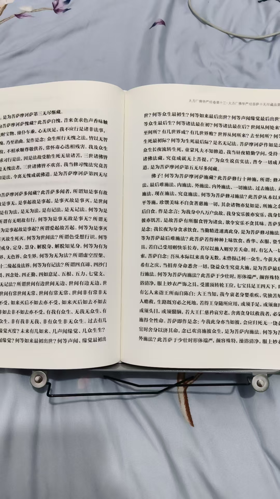
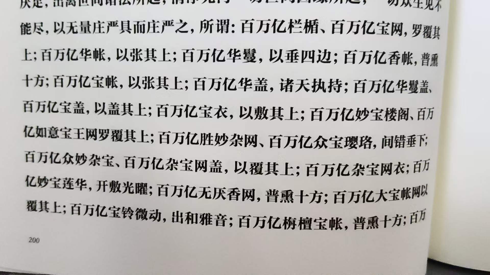
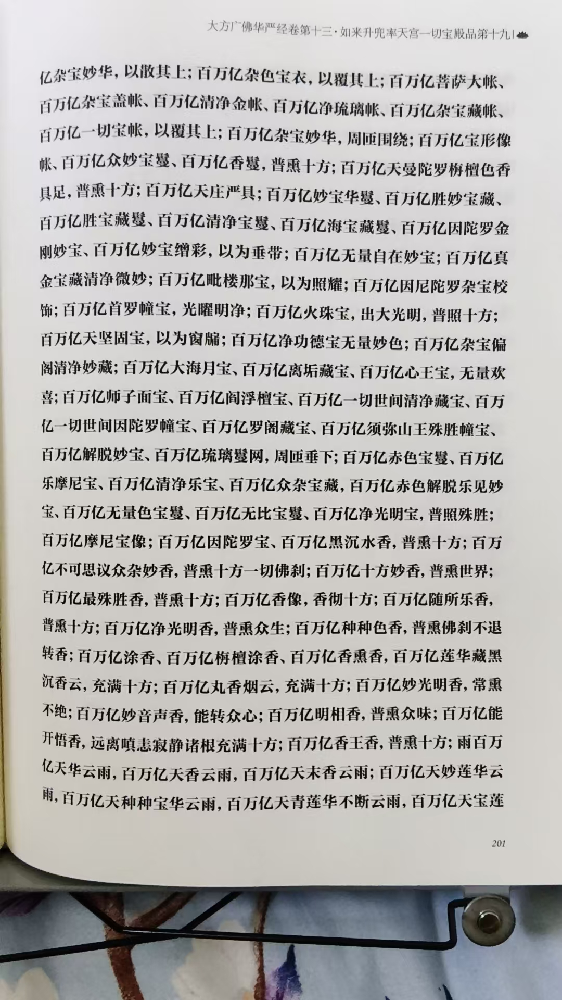
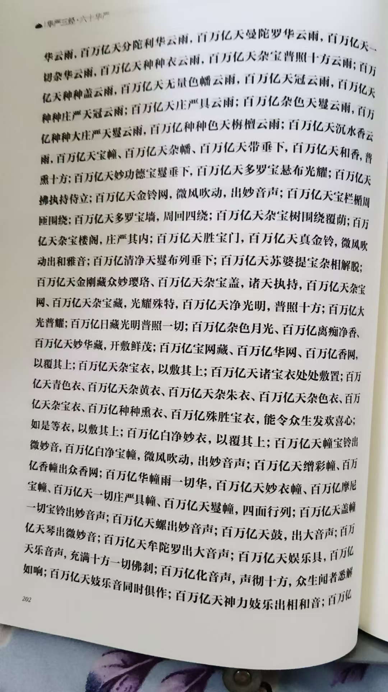
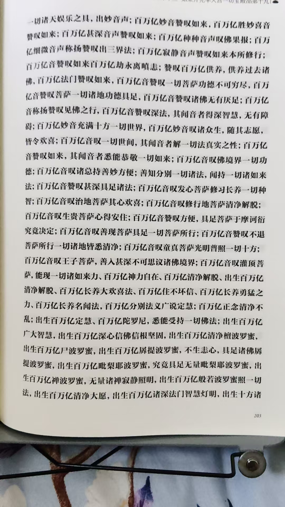
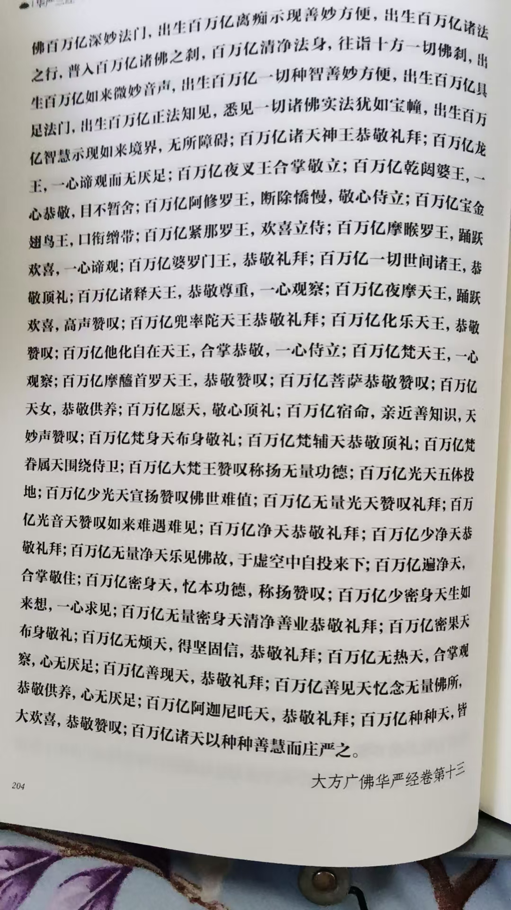

20260903修经 世间法 出世间法
修炼修行 原始对话记录世间法
色受想行识
出世间法
戒身，定身，慧身，解脱身，解脱知见身
有为法
欲界，色界，无色界，众生界
无为法
虚空涅槃，数缘灭，非数缘灭，十二缘起及法界
做出了明确的答复定义
但是这样说，太高深
不是一般人能懂的
简单的说，内观，肉体类，就是世间法
平行光化身，天人身，慧身，法身，菩萨身，佛身
就是出世间法
因为已经脱离了人事
四十华严，直接是修习法
六十华严多是讲解法
所以读起来要快的多

早起晚睡，读了一半了
还是多读楞严经
找到自己开悟的方法
看每一部经，
读不懂师父
一个，说到弟子的层次
比如比丘尼，两千人
一个是层级低，一个是人少
逐渐，层级提升，人数也成了几万人
再以后，是菩萨在听，各个眷属百万人
逐渐，自己的心在一步一步变大
这个眷属，我理解为分身
如果是七大姑八大姨，根本不会带去上万，百万
华严经，常人没有那么大的心
比如，我读到的这一段
你想一下，百万亿栏栒
想百万亿，金银琉璃的围栏
想一根，十根可以
百万亿想的没那么大，没那么多吧
这是一个百万亿，第二个，百万亿宝网
珍珠宝器编制的网子，装饰
然后，





百万亿诸天以种种善慧而庄严之
这么多百万亿，能观想得到吗
不止这些
下一节，
继续百万亿观想
想想，自己的心得多大
是不是财富
是不是宝藏
别去认字
起码心里想出来
再去认真的观想
心境一片光明
这是目的
这个心相光明，是结合能量来的
性命不能同步，观想到了也枉然
@观自在 ，读经的时候，先拉手，放出能量来
读一段，停下来，
回看自己的身体
一直看到自己的身体，
越来越透明
没有一点灰，杂质
从头发到脚尖，都是透明的
这个透明的身体，就是自己的性光体
心性的自己
一次一次，看清楚了
就离开悟不远了
简单的说，这个透明的，光化的自己，才是真的自己
昨晚也说了打坐，内观
观自己的内脏，练九转五行大还丹，这还是世间法，有为法
看到了自己的心性光体，
看着自己分身，练剑
就进入出世间法，无为法修炼了
出世间法，无为法修炼才是咱们需要的
世间法，有为法，增强体质，延年益寿
出世间法，无为法，提升超能力，提升果位
读楞严经，别试图读完
每天读一段
反复品味
参悟其中
参悟参悟，先参与
以期开悟
问题找到了答案，就是悟出来了，俗叫，恍然大悟
刚才那几页的百万亿
我能观想出来，
并且打造我自己的佛国世界
光明没有边际
层层护卫
所以，我是在修经
世间法，出世间法，还有修经
记录开头，是两组词。
世间法：色受想行识。出世间法：戒身、定身、慧身、解脱身、解脱知见身。有为法：欲界、色界、无色界、众生界。无为法：虚空涅槃、数缘灭、非数缘灭、十二缘起及法界。
摆完，他自己补了一句："但是这样说，太高深，不是一般人能懂的。"
于是换了白话。"简单的说，内观，肉体类，就是世间法"；"平行光化身，天人身，慧身，法身，菩萨身，佛身，就是出世间法"，因为"已经脱离了人事"。
后面是读经的实况。六十华严多是讲解法，四十华严"直接是修习法"，所以读起来快得多。早起晚睡，读了一半；他还是说，多读楞严经，找到自己开悟的方法。
他讲了一段华严的读法。经里一场法会，先是比丘尼两千人，接着层级提升，人数成了几万，再往后是菩萨在听，各个眷属百万人。"逐渐，自己的心在一步一步变大。" 这个眷属，他理解为分身。所以下一页全是百万亿：百万亿栏栒，百万亿宝网，百万亿诸天。"能观想得到吗。" 他反问。"别去认字，起码心里想出来，再去认真的观想。"
中间夹着方法。读经的时候，先拉手，放出能量来；读一段，停下来，回看自己的身体，一直看到"越来越透明，没有一点灰，杂质"。从头发到脚尖都是透明的。这个透明的身体，"就是自己的性光体"。
"这个透明的，光化的自己，才是真的自己。"
最后的划界很干脆。观自己的内脏，练九转五行大还丹，"这还是世间法，有为法"。看到自己的心性光体，看着自己的分身练剑，"就进入出世间法，无为法修炼了"。
出世间法"提升超能力，提升果位"；世间法"增强体质，延年益寿"。
他没多停。末尾是："所以，我是在修经。"